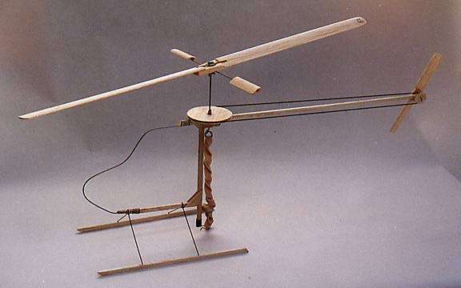

If you want fun and excitement in a novel Free Flight model, you have got to have one of these helicopters!
I built this one straight from the Penni kit available from Peck Polymers. All of the tricky stuff is preshaped, and the kit goes together very easily in just a few hours.
In flight it is very stable, circling to the right, in a slowly drifting hover. It doesn't need any more space than a standard school gym, and has been flown in sites ranging from an average sized living room to the Makon Airship Hangar at Moffett Field. Times over 35 seconds indoors, and over 50 seconds outside, have been regularly witnessed.
This model has proven so popular that there are now 4 flying in my local club, with at least one or two more on the way. Mass launches are a ball. Don't delay, get your's now!!
"Penni" Helicopter Kit available from,
Peck Polymers
P.O. Box 710399
Santee, CA 92072-0399
Want to see what others think of the Penni?
Copyright 1997, Thayer Syme. All rights reserved